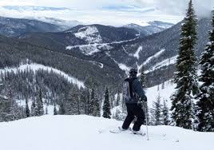

September 30, 2019
As I wake to the snow covered tree tops, bushes, and cars
I hear the magic of an espresso machine as the barista makes my peppermint mocha.
I taste the cold of poor farmer on my throat as I count the moments left on the ski lift
I smell potato soup cooking in the crockpot and sugar cookies baking in the oven
There's something very magical about the first snowfall.
Magical : )


Note: these images are not my own and have been pulled from Google.
Next